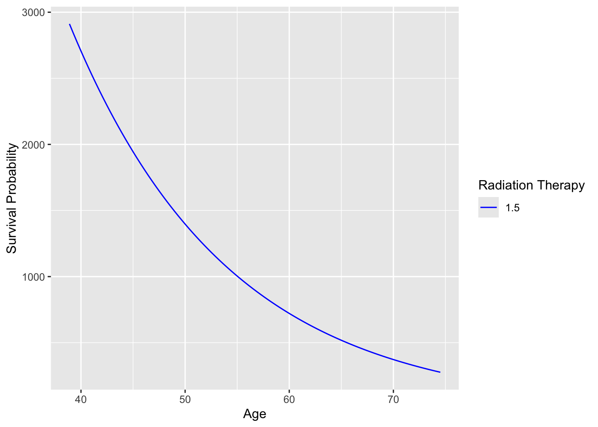

The accelerated failure time model is a parametric survival analysis technique used to model the relationship between the time to event of interest (e.g., time to failure) and a set of predictor variables. It assumes that the covariates have a multiplicative effect on the time to the event. In other words, the time to event is accelerated or decelerated by a factor that depends on the values of the covariates.This differs from the Cox proportional hazards model, which assumes that covariates have a multiplicative effect on the hazard rate, not the time to the event.
Mathematical Expression
Mathematically, the AFT model can be expressed as:
\(\log(T) = X\beta + \sigma\varepsilon\)
Where:
T is the survival time
log(T) is the logarithm of the survival time
X is a matrix of predictor variables
β is a vector of coefficients representing the effects of the predictor variables on the logarithm of the survival time
σ is a scaler quantity representing the scale parameter, which influences the variability of the error term ε in the model.
ε is the error term assumed to follow a specific distribution (e.g., normal distribution for log-normal, extreme value distribution for Weibull) that corresponds to the chosen parametric form of the model.
Example of AFT model using “Log-Normal Distribution”
library(survival)attach(lung)# Fit an AFT model using lognormal distributionmodel_aft <-survreg(Surv(time, status) ~ age + sex + ph.ecog, data = lung, dist ="lognormal")# Model summarysummary(model_aft)
Call:
survreg(formula = Surv(time, status) ~ age + sex + ph.ecog, data = lung,
dist = "lognormal")
Value Std. Error z p
(Intercept) 6.49479 0.58276 11.14 < 2e-16
age -0.01918 0.00833 -2.30 0.02126
sex 0.52195 0.15278 3.42 0.00063
ph.ecog -0.35557 0.10331 -3.44 0.00058
Log(scale) 0.02823 0.05596 0.50 0.61391
Scale= 1.03
Log Normal distribution
Loglik(model)= -1146.9 Loglik(intercept only)= -1163.2
Chisq= 32.59 on 3 degrees of freedom, p= 3.9e-07
Number of Newton-Raphson Iterations: 3
n=227 (1 observation deleted due to missingness)
The summary output will provide the estimated coefficients, standard errors, and p-values for each predictor variable.
(Intercept) age sex ph.ecog
661.6830913 0.9810009 1.6853157 0.7007762
Interpretation
For age,acceleration factor \(< 1\) indicates that for each one-unit increase in age, the survival time is slowed down by a factor of 0.98 (or a 2% decreasein survival time).
For sex, acceleration factor \(> 1\) indicates that males have 68% accelerated survival time.
An acceleration factor of ph.ecog \(< 1\) suggests a 30% decelerated survival time associated with ph.ecog.
Plotting AFT Model Graphically
suppressPackageStartupMessages({library(survival)library(survminer)library(ggplot2)})# Fit the AFT model on the lung datasetaft_model <-survreg(Surv(time, status) ~ age + sex + ph.ecog, data = lung, dist ="lognormal")# Create a new data frame with predicted survival timesdf <-data.frame(time = lung$time, age = lung$age, sex = lung$sex, ph.ecog = lung$ph.ecog, status=lung$status)df$surv_times <-predict(aft_model, newdata = df)# Plot the survival curves based on the AFT modelggsurvplot(survfit(Surv(surv_times, status) ~1, data = df),data = df, xlab ="Time", ylab ="Survival Probability")
The survival curve plotted based on the AFT model for the lung dataset illustrates how the probability of survival changes as time progresses, showing the impact of different covariate levels on survival probabilities.
Example of AFT model using “Weibull Distribution”
# Fit an AFT model using weibull distributionmodel_aft_wb <-survreg(Surv(futime, fustat) ~ age + resid.ds + rx, data = ovarian, dist ="weibull")# Model summarysummary(model_aft_wb)
Call:
survreg(formula = Surv(futime, fustat) ~ age + resid.ds + rx,
data = ovarian, dist = "weibull")
Value Std. Error z p
(Intercept) 10.5634 1.3810 7.65 2e-14
age -0.0661 0.0190 -3.48 0.0005
resid.ds -0.5002 0.3799 -1.32 0.1879
rx 0.5152 0.3236 1.59 0.1114
Log(scale) -0.6577 0.2384 -2.76 0.0058
Scale= 0.518
Weibull distribution
Loglik(model)= -87.9 Loglik(intercept only)= -98
Chisq= 20.17 on 3 degrees of freedom, p= 0.00016
Number of Newton-Raphson Iterations: 6
n= 26
(Intercept) age resid.ds rx
3.869157e+04 9.360366e-01 6.063911e-01 1.673914e+00
Interpretation
For age, an acceleration factor of 0.93 indicates that for each one-unit increase in age, the survival time is decelerated by a factor of 0.93(or a 7% decrease in the survival time)
For residual disease status, an acceleration factor of 0.60 suggests that a decrease in residual disease status is associated with a 40% decelerated survival time.
an acceleration factor of 1.67 suggests a 67% accelerated survival time for patients receiving a different type of radiation therapy (rx = 2) compared to the reference group (rx = 1).
Survival Curve Plotting on ‘Ovarian’ Dataset
# Fit the AFT model (weibull distribution) on your datamodel_aft <-survreg(Surv(futime, fustat) ~ age + resid.ds + rx, data = ovarian, dist ="weibull")# Create survival curves for different levels of predictor variablesplot_data <-with(ovarian, data.frame(age =seq(min(age), max(age), length.out =100),resid.ds =mean(resid.ds),rx =mean(rx)))# Predict survival times based on the AFT modelplot_data$survival <-predict(model_aft, newdata = plot_data)# Plot the survival curvesggplot(plot_data, aes(x = age, y = survival, color =factor(rx), linetype =factor(rx))) +geom_line() +labs(x ="Age", y ="Survival Probability", color ="Radiation Therapy", linetype ="Radiation Therapy") +scale_linetype_manual(values =c("solid", "dashed", "dotted")) +scale_color_manual(values =c("blue", "red", "green"))

The survival curve plotted based on the AFT model for the ovarian dataset how the probability of survival changes as age increases.
Conclusion
In AFT models, unlike Cox proportional hazards models, survival times follow an assumed parametric distribution (e.g., Weibull, log-logistic, log-normal), directly modelling the effect of covariates on the time scale.